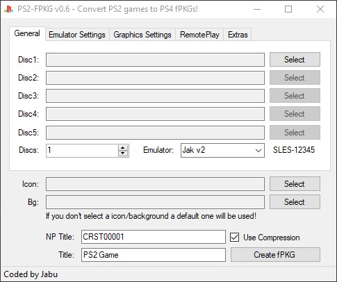
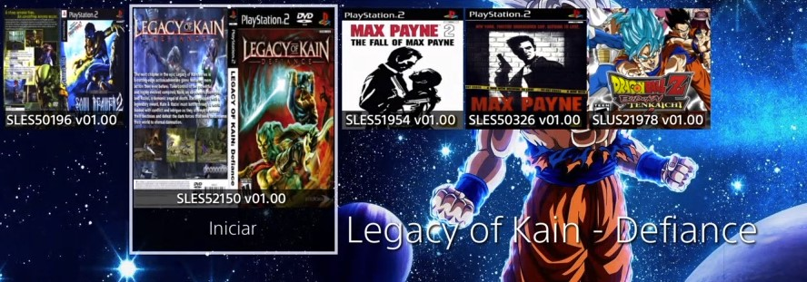

PS2 FPKG
Una herramienta que convierte juegos de PS2 en fPKG de PS4
Para esta Guia
Requisitos para este tutorial
- PC o Notebook con Windows 7, 8, 8.1, 10
- Para descomprimir archivos .rar o .zip
Programas para este Tutorial
| Archivos | Servidores | |
|---|---|---|
| PS2-FPKG | Mega | |
| WEB Oficial | psx-place.com | |
Para Empezar este Tutorial
- Descargamos los archivos
- Descomprimimos el archivo .rar o .zip
- PS2-FPKG v????
- Con la última versión disponible
- Una vez descargado nuestro archivo
- Lo extraemos y ejecutamos
- Al extraer el archivo solo Buscaremos el archivo PS2-FPKG.exe
- Al abrir la aplicación nos mostrara el siguiente menú 
- En la primera ventana General veremos
- Disc1: donde buscaremos la ISO de nuestro juego si el juego cuenta con más Disco en el siguiente colocaremos el Disco 2 y así sucesivamente
- Si cuenta con más disco cambiaremos la casilla de Discs a la cantidad de disco que necesitemos
- En Icon y Bg buscaremos la imagen del icono del juego y el fondo para verlos después en nuestra consola 
- El NP Title: nos muestra el Id del juego cargado con la ISO
- El Title: al cargar la ISO nos mostrar el nombre del Juego lo podemos cambiar a nuestro Gusto
- Solo nos quedaría dale al botón Create fPKG y seleccionar donde queremos que se gurde nuestro pkg
- Cuando termine buscamos nuestro archivo PKG y lo pasamos a un USB en Formato exFat y lo instamos en nuestra consola
- Listado de juegos compatibles psdevwiki.com para revisar los juegos compatible pero Igual hay q ir probando para revisar si hay juegos nuevos no registrados
- Y listo


×